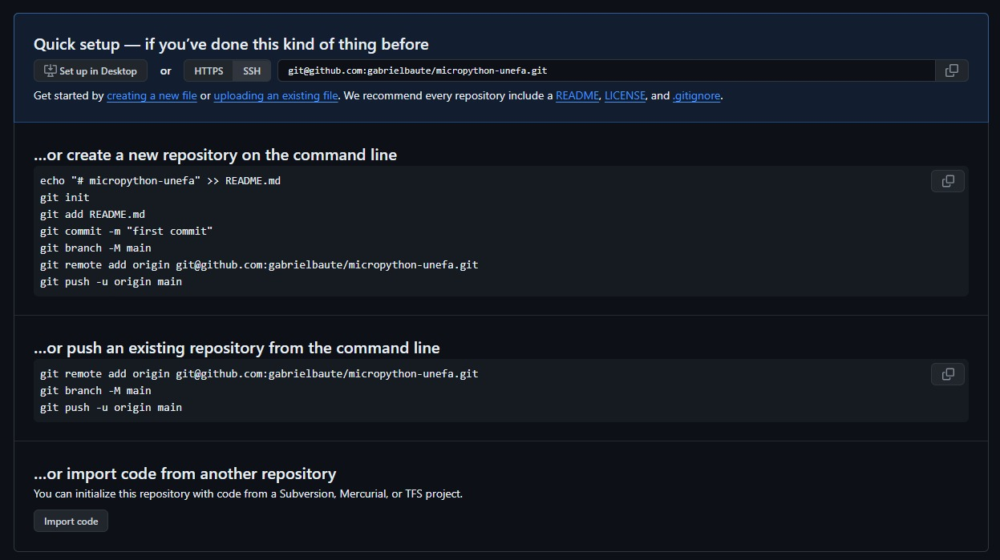

Vinculando nuestro proyecto con nuestro repositorio
Al crear un repositorio de github en la web, nos arrojará la siguiente vista:

En esta imagen podemos ver los comandos reocmendados para comenzar a usarlo. Preferiremos, por ahora, la conexión mediante ssh. Una vez creado el repositorio en github, nos dirigimos a nuestra terminal de git (ubicados en el proyecto que deseamos trabajar), y allí podemos escribir:
git remote add origin git@github.com:tu-nombre-de-usuario/el-nombre-de-tu-repositorio.git
De momento no haremos más que seguir las mismas indicaciones de github. Este comando se utiliza para agregar un repositorio remoto de Git a tu repositorio local. Un repositorio remoto es una copia del repositorio que se almacena en un servidor remoto, como GitHub. Desglosando en detalles:
-
git remote add:Este es el comando principal que se utiliza para agregar un repositorio remoto.
-
origin:Este es el nombre que se le da al repositorio remoto. Es un nombre arbitrario que puedes elegir, pero es habitual usar origin para el repositorio remoto principal.
-
git@github.com:tu-nombre-de-usuario/el-nombre-de-tu-repositorio.git:Esta es la URL del repositorio remoto. La URL indica la ubicación del repositorio en el servidor remoto.
Al ejecutar este comando, se agregará el repositorio remoto especificado a tu repositorio local, además de que se le considerará el origen (por el comando origin). Esto significa que podrás usar comandos Git como git fetch y git pull para obtener los últimos cambios del repositorio remoto y actualizar tu repositorio local.
Renombrar la rama
El comando anterior establecía un origen para nuestro repositorio, el punto al que vamos a enviar y del que podemos recibir cambios. El siguiente paso es:
git branch -M main
La sintaxis nos indica simplemente que vamos a renombrar la rama sobre la que estamos trabajando como "main" (principal). Por defecto, el sistema Git que inicializamos con git init nombra la rama de trabajo como "master", pero la convención actual es denominarla "main". El acto de cambiar el nombre es lo que asignamos con el parámetro -M en el comando.
Uso del repositorio remoto
Una vez que hayas agregado el repositorio remoto, podrás usar los siguientes comandos para interactuar con él:
git fetch: Este comando se utiliza para obtener los últimos cambios del repositorio remoto. Es decir, traer desde github los cambios a tu local.git pull: Este comando se utiliza para obtener los últimos cambios del repositorio remoto y fusionarlos en tu repositorio local.git push: Este comando se utiliza para enviar los cambios que hayas hecho localmente al repositorio remoto.
Y de hecho, es el último comando de esta lista, el git push el que se nos recomienda usar al final de las instrucciones de github que vimos arriba:
git push -u origin main
Este comando se utiliza para enviar tus cambios locales a la rama principal de un repositorio remoto de Git y configurar la rama local main para que se rastree automáticamente la rama remota origin/main.
Veamos paso a paso lo que hace cada parte del comando:
-
git push:Este es el comando principal que se utiliza para enviar cambios desde tu repositorio local a un repositorio remoto. 2.
-u:Esta opción indica a Git que configure la rama local main para que se rastree automáticamente la rama remota
origin/main. Esto significa que cuando ejecutes el comando git push en el futuro, tus cambios se enviarán automáticamente a la ramaorigin/mainen el repositorio remoto. -
origin:Este es el nombre del repositorio remoto al que deseas enviar tus cambios. Debe ser el mismo nombre que usaste cuando agregaste el repositorio remoto con el comando git remote add.
-
main:Este es el nombre de la rama local que deseas enviar al repositorio remoto. Debe ser el mismo nombre que la rama remota que deseas actualizar. En este caso, la rama local main se enviará a la rama remota origin/main.
Al ejecutar este comando, tus cambios locales se enviarán a la rama remota origin/main en el repositorio remoto. Además, la rama local main se configurará para que se rastree automáticamente la rama remota origin/main. Esto significa que la próxima vez que ejecutes el comando git push, tus cambios se enviarán automáticamente a la rama origin/main sin necesidad de especificar el nombre de la rama.